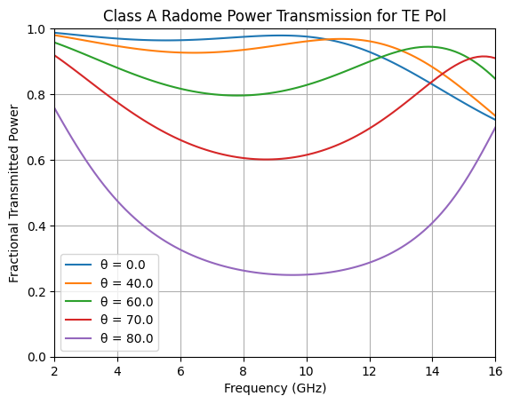
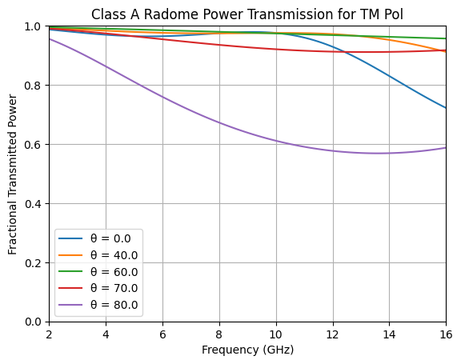

Usage Examples
Imports Used for All Examples
from pypssfss import (analyze, atoutputs, extract_result, inch, Layer,
mil, mm, plot_sheet, polyring, res2fresnel, ThetaPhi)
import numpy as np
from matplotlib import pyplot as plt
Detected IPython. Loading juliacall extension. See https://juliapy.github.io/PythonCall.jl/stable/compat/#IPython
Class A Radome
This example is from from Y. T. Lo and S. W. Lee, Antenna Handbook, pp. 31-17 through 31-18
Specify the radome dielectric layers in strata
skin = Layer(epsr=3.2, tandel=0.015, width=35*mil)
strata = [Layer(),
skin,
Layer(epsr=1.1, tandel=0.005, width=0.25*inch),
skin,
Layer()]
Specify desired frequencies and scan angles
freqs = np.linspace(2, 16, 100)
scan = ThetaPhi([0, 40, 60, 70, 80], 0)
Analyze the radome performance
results = analyze(strata, freqs, scan, showprogress=False)
Extract frequency, scan angle, and transmission coefficients from computed results
datamat = extract_result(results, atoutputs("fghz theta s21mag(te,te) s21mag(tm,tm)"))
f, thetas, s21magte, s21magtm = map(np.array, zip(*datamat))
tepwr = s21magte ** 2
tmpwr = s21magtm ** 2
Plot TE transmitted power versus frequency for each scan angle
Compare to plot 31-14a on page 31-18 of Lo and Lee.
for theta in np.unique(thetas):
ind = theta == thetas
plt.plot(f[ind], tepwr[ind], label = f'θ = {theta}')
plt.legend()
plt.xlabel('Frequency (GHz)')
plt.ylabel('Fractional Transmitted Power')
plt.title('Class A Radome Power Transmission for TE Pol')
plt.ylim(0, 1); plt.yticks(np.arange(0, 1.1, 0.2))
plt.xlim(2, 16); plt.xticks(np.arange(2, 17, 2)); plt.grid(True)
plt.show()

Plot TM transmitted power versus frequency for each scan angle
Compare to plot 31-14b on page 31-18 of Lo and Lee.
for theta in np.unique(thetas):
ind = theta == thetas
plt.plot(f[ind], tmpwr[ind], label = f'θ = {theta}')
plt.legend()
plt.xlabel('Frequency (GHz)')
plt.ylabel('Fractional Transmitted Power')
plt.title('Class A Radome Power Transmission for TM Pol')
plt.ylim(0, 1); plt.yticks(np.arange(0, 1.1, 0.2))
plt.xlim(2, 16); plt.xticks(np.arange(2, 17, 2)); plt.grid(True)
plt.show()

Double Square Loop FSS Exported to HFSS Fresnel Table
This example is adapted from “Antenna Radome SBR+ Using Fresnel Boundary” beginning on the page labeled “1-66” of the 2024R2 HFSS Help PDF file.
Create and plot the sheet triangulation
a = np.sqrt(2) * np.array([1, 2.125])
b = np.sqrt(2) * np.array([1.5, 3.125])
sheet = polyring(a=a, b=b, units=mm, sides=4, orient=45, s1=[8,0], s2=[0,8], ntri=2000)
print(sheet)
plot_sheet(sheet, unitcell=True, linewidth=0.75)
plt.title("Double Square Ring for Fresnel Table Example")
plt.show()
RWGSheet: style=polyring, class=J, 1136 nodes, 3032 edges, 1896 faces, Zs=0.0 + 0.0im Ω
Complete the model, analyze it, export results to Fresnel table
Analysis takes about one minute on a core i7-14700 CPU
dwidth = 3 * mm
duroid = Layer(epsr=2.2, tandel=0.0009, width=dwidth)
strata = [Layer(),
duroid,
sheet,
duroid,
Layer(width = -2 * dwidth)] # Note width of final layer = negative sum of all other layer widths!
steering = ThetaPhi(range(0, 46, 5), 0)
freqs = np.arange(10, 21, 2)
results = analyze(strata, freqs, steering, resultfile="double_square_loop.res", showprogress=False)
res2fresnel(results, "double_square_loop.rttbl")
# View first few lines of the Fresnel Table file:
with open("double_square_loop.rttbl", "r") as file:
for i, line in enumerate(file):
if i >= 14:
break
print(line.strip())
# HFSS-compatible Fresnel reflection/transmission table created by PSSFSS
# Created on 2025-05-11 at 23:15:25.211
RTTable
# <num_theta_step> = <number_of_points> - 1
18
# MultiFreq <freq_start_ghz> <freq_stop_ghz> <num_freq_steps>
MultiFreq 10.0 20.0 5
# Data section follows. Frequency loops within theta
#<rte_rl> <rte_im> <rtm_rl> <rtm_im> <tte_rl> <tte_im> <ttm_rl> <ttm_im>
-0.47242 0.75964 0.47242 -0.75964 0.10767 -0.43144 0.10767 -0.43144
0.22820 0.96687 -0.22820 -0.96687 -0.02490 -0.08788 -0.02490 -0.08788
0.73141 0.01690 -0.73141 -0.01690 0.66104 0.13868 0.66104 0.13868
0.13295 -0.23622 -0.13295 0.23622 0.77974 -0.55881 0.77974 -0.55881
-0.01826 -0.07712 0.01826 0.07712 0.43567 -0.89342 0.43567 -0.89342
Additional Usage Examples
There are many additional examples in the Usage Examples
section of the PSSFSS documentation. Also, be sure to check out the
Element Gallery that illustrates the
range of FSS/PSS geometries supported by pypssfss. Each entry in the gallery is a so-called “demo card”.
Clicking on a card opens a page showing the code used to create the element.
Example of additional documentation from doc versus help:
help(res2fresnel)
Help on function res2fresnel in module pypssfss.pypssfss:
res2fresnel(results: juliacall.VectorValue | str, tepfile: str) -> None
Wrapper function for the Julia PSSFSS `res2fresnel` function. Creates an HFSS SBR+-compatible
Fresnel table from a PSSFSS result file, or from the vector of results returned by the
analyze function. For detailed documentation, type doc(res2fresnel) or see the Julia PSSFSS
version documentation at
https://simonp0420.github.io/PSSFSS.jl/stable/reference/#PSSFSS.Outputs.res2fresnel
from pypssfss import doc
doc(res2fresnel)
res2fresnel(results::Vector{Result}, fresnelfile::AbstractString) res2fresnel(resultfile::AbstractString, fresnelfile::AbstractString) Create an HFSS-compatible "Fresnel table" file from results, the vector of Result objects returned by the analyze function. If the first positional argument is an AbstractString, it is assumed to be the name of a PSSFSS results file, from which the vector of results will be read. Since Fresnel tables contain data for only a single ϕ value, if the input result vector contains data for multiple ϕ values, only the value with minimum magnitude will be used. Fresnel tables may be formatted to contain only reflection coefficients (for a so-called "opaque" structure), or they may contain both reflection and transmission coefficients (a "non-opaque" structure). An opaque structure is one for which the s21 partition of the generalized scattering matrix is identically zero for all frequencies and scan angles. The correct format to be written will be selected automatically by res2fresnel. Requirements for Fresnel Table Compatibility The data in results must satisfy the following requirements: 1 Incidence angles rather than incremental phasings must be used. 2 θ angles must begin at 0 and be uniformly spaced up to the maximum θ value present. 3 The increment in θ values must divide evenly into 90. 4 If multiple frequencies are present, then they must have a uniform spacing. A Fresnel table must contain θ values equally spaced between 0 and 90, inclusive. If the results vector provided as input does not contain θ values all the way to 90, then the scattering matrix values corresponding to the maximum provided θ value will be copied into the remaining angular "slots" as necessary to provide a complete Fresnel table. There are some limitations on the type of unit cell geometry that should be used for creating Fresnel tables. First, a Fresnel table contains data for only a single ϕ value. This means that the geometry being analyzed must be such that the scattering matrix of the structure is essentially independent of ϕ. As a counterexample, a strip grid is not a suitable structure, since its scattering properties are strongly dependent on ϕ. Second, a Fresnel table records only co-polarized (TE → TE and TM → TM) transmission and reflection coefficients. This means that the structure being analyzed must not generate cross-polarized (TE → TM or TM → TE) transmission or reflection coefficients of significant amplitude. Fresnel tables consider only incidence from a single "front" region. When creating the Fresnel table, the front region is taken to be Region 1 of the PSSFSS model (i.e. the first layer present in the PSSFSS strata vector). Additional Requirements for Non-Opaque Structures When used in an HFSS SBR+ model, the scattering properties read from the Fresnel table are applied to a zero-thickness surface, so that the transmitted ray is launched from the same "hit" point of the surface that was encountered by the incident ray. Because of this, the phase reference plane for both input and output ports of the PSSFSS model should be located at this front surface (i.e. the first interface plane in the strata vector). This is accomplished by specifying zero width for the first Layer object (i.e. using Layer() for the first layer), and then specifying the final layer's width to be the negative of the sum of all the other layer widths in the strata vector. The negative width value shifts the output port reference plane to coincide with that of the input port. As an example: strata = [Layer(), Layer(width=2mm, ϵᵣ=2.2) Layer(width=3.3mm, ϵᵣ=3.0), Layer(width=2mm, ϵᵣ=2.2), Layer(width=-7.3mm)]